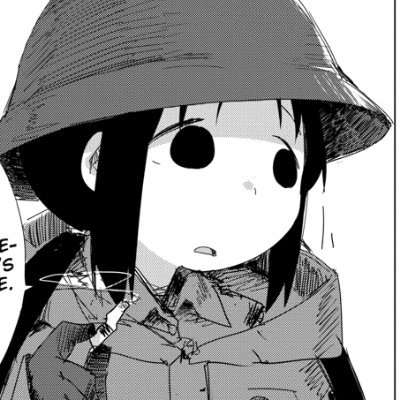

懸想
@blackdoginmyhed
@LwrDHYyuxR22499 帅!!
牧鸢
@LwrDHYyuxR22499
我这边在警局门口抢人的数据还没恢复出来呢，
被抢的老猪狗自己倒把我们抢人的视频发出来了🤣🤣，在这网暴自己，蚌埠住了。还在视频里面把园区伤害自己女儿受到的伤扣在我们志愿者头上
你甚至可以看到神秘组员拦截车辆一拳把门干开直接把人薅下来神秘蒙古长发男发动地面技直接把家长拖入地面暴打老猪狗 https://t.co/wS2OsHu5Us